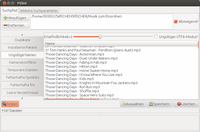

fslint
Dieser Artikel wurde für die folgenden Ubuntu-Versionen getestet:
Ubuntu 16.04 Xenial Xerus
Ubuntu 14.04 Trusty Tahr
Zum Verständnis dieses Artikels sind folgende Seiten hilfreich:
FSlint  ist eine Sammlung nützlicher Hilfsprogramme zum Aufräumen der Festplatte, die unter einer gemeinsamen grafischen Oberfläche erreichbar sind. Dabei steht FS für FileSystem und lint für Staub.
ist eine Sammlung nützlicher Hilfsprogramme zum Aufräumen der Festplatte, die unter einer gemeinsamen grafischen Oberfläche erreichbar sind. Dabei steht FS für FileSystem und lint für Staub.
Mit ihnen lassen sich u.a.
doppelte Dateien (nützlich z.B. bei großen Musiksammlungen)
leere Verzeichnisse
Dateien mit nicht UTF8-konformen Namen
temporäre Dateien
fehlerhafte symbolische Verknüpfungen
ungültige IDs in der Benutzer und Gruppenverwaltung
non-stripped Binaries (ausführbare Dateien mit Zusatzinformation zur Fehlersuche für Programmierer)
Dateien mit Namenskonflikten (gleiche Dateinamen, Aliase etc.)
auf der Festplatte aufspüren. Daneben bietet das Werkzeug noch als weitere Möglichkeit die Anzeige der installierten Pakete.
Achtung!
FSlint zeigt lediglich Dateien mit den gewählten Parametern an. Nicht alle leeren Verzeichnisse oder Dateien, die angezeigt werden, können auch bedenkenlos gelöscht werden! Es können auch wichtige Systemdateien und Verzeichnisse bei entsprechender Suchpfadauswahl angezeigt werden, die zum Teil sogar als Dubletten vorliegen müssen! Auch hängende symbolische Links können gewollt sein und einen Zweck erfüllen (z.B. lock in den Profil-Verzeichnissen von Thunderbird und Firefox).
Daher sollten nur Dateien und Verzeichnisse gelöscht werden, deren Inhalt und Bedeutung man einschätzen kann. Des Weiteren bietet das Programm über die Schaltfläche "Zusammenfügen" die Möglichkeit, die Duplikate einer ausgewählten Datei per Hardlink mit dieser zu verknüpfen. Diese Möglichkeit sollte man nur bei bekannten Dateien nutzen und bedenken, dass sich spätere Änderungen am Dateiinhalt dann auf alle Pfade, die zu der Datei führen, auswirken.
Installation¶
Dazu muss nur folgendes Paket installiert [1] werden:
fslint (universe)
 mit apturl
mit apturl
Paketliste zum Kopieren:
sudo apt-get install fslint
sudo aptitude install fslint
Manuell¶
Um das Programm selbst aus dem Quellcode zu erstellen, folgt man der Anleitung auf der Projektseite .
Verwendung¶

Nach der Installation kann man das Programm über den Befehl fslint-gui ausführen [2]. fslint hat eine intuitiv bedienbare deutsche Oberfläche, mit der man gefundene Dubletten und Dateileichen auch sofort löschen kann.
Das Programm durchsucht alle Unterordner im angegebenen Verzeichnis. Unter "Weitere Suchparameter" kann man Unterordner von der Suche ausschließen. Unter "Zusätzliche Suchparameter" kann man mit find-Befehlen die Suche verfeinern. So werden z.B. mit der Angabe von:
-iname '*.JPG'
nur Bilddateien mit der entsprechenden Endung unabhängig von Groß-Kleinschreibung berücksichtigt.
Benutzung ohne GUI¶
fslint kann auch auf der Kommandozeile genutzt werden [3]. Das Programm startet man dann z.B. mittels des Befehls:
/usr/share/fslint/fslint/fslint /Pfad/des/zu/durchsuchenden/Verzeichnisses/
Man kann z.B. auch gezielt nur nach doppelten Dateien suchen, wenn man den Befehl
/usr/share/fslint/fslint/findup
verwendet.
Um den Programmpfad einzusparen und die verschiedenen Kommandozeilenprogramme direkt aufrufen zu können, empfiehlt es sich, den Suchpfad für ausführbare Programme um das Verzeichnis /usr/share/fslint/fslint/ zu erweitern.
Links¶
Hausputz – Dateisystemintegrität bewahren mit Fslint
 - LinuxUser, 05/2010
- LinuxUser, 05/2010DupeGuru - Alternative zu fslint zum Suchen und Löschen doppelter Dateien
Systempflege
 Übersichtsartikel
Übersichtsartikel
- Erstellt mit Inyoka
-
 2004 – 2017 ubuntuusers.de • Einige Rechte vorbehalten
2004 – 2017 ubuntuusers.de • Einige Rechte vorbehalten
Lizenz • Kontakt • Datenschutz • Impressum • Serverstatus -
Serverhousing gespendet von